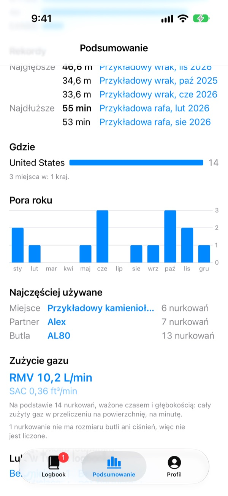

Najpierw zaktualizuj wszystkie urządzenia
Wiele problemów znika, gdy na każdym urządzeniu działa najnowsza kompilacja. Otwórz TestFlight na każdym używanym iPhonie, iPadzie i Macu i zainstaluj dostępne aktualizacje. Starsza kompilacja przestaje wysyłać zmiany, dopóki nie zostanie zaktualizowana, i wyświetla Zaktualizuj Thermocline, aby dalej synchronizować. Twoje zmiany są zachowywane i zostaną wysłane po aktualizacji.
Pobieranie z komputera nurkowego
Komputer nie zostaje znaleziony
- Wybudź komputer i przełącz go w tryb Bluetooth (Shearwater: Menu → Bluetooth). Pozostaje w nim tylko około dwóch minut.
- Trzymaj go blisko iPhone’a, iPada lub Maca.
- Komputery Shearwater wracają do ostatniego urządzenia, z którym się łączyły. Jeśli w pobliżu jest Twój telefon lub inny Mac, wyłącz Bluetooth na tym urządzeniu i spróbuj ponownie.
- Sprawdź, czy Bluetooth jest włączony i czy Thermocline może z niego korzystać (iPhone: Ustawienia → Thermocline; Mac: Ustawienia systemowe → Prywatność i ochrona → Bluetooth).
To Predator lub Petrel 1 i iPhone go nie widzi
Używają starszego Bluetooth (Bluetooth Classic), z którego iPhone’y i iPady nie mogą korzystać. Pobierz z nich dane na Macu (zobacz przewodnik) albo zaimportuj ich nurkowania z Shearwater Cloud lub z pliku UDDF.
Łączy się, ale prosi o PIN
Wpisz kod pokazany na ekranie komputera. Jest potrzebny tylko za pierwszym razem.
„Brak nowych nurkowań”
Pobierane są tylko nurkowania nowsze niż ostatnie pobranie. Jeśli usunięto nurkowanie i chcesz je odzyskać, włącz Pobierz wszystkie nurkowania z komputera i pobierz ponownie. Nurkowania, które już są w logbooku, są pomijane.
Pobieranie zatrzymało się w połowie
Wybierz Zachowaj, aby zapisać nurkowania, które dotarły, a potem pobierz ponownie resztę. Jeśli wciąż się zatrzymuje, wybierz Spróbuj ponownie blisko komputera i wyślij log pobierania.
Pobieranie przez kabel na Macu się nie udaje
- Sprawdź, czy port pasuje do kabla: lista pokazuje rodzaj każdego portu i ostrzega, gdy nie pasuje do wybranego modelu.
- Odłącz i ponownie podłącz kabel, a potem użyj przycisku odświeżania, aby ponownie poszukać kabli.
- Wykonaj kroki z sekcji Zanim zaczniesz dla swojego modelu.
- Pobieranie przez kabel jest nowe. Wyślij log pobierania w każdym przypadku.
Synchronizacja między urządzeniami
Aplikacja na iPhonie informuje, że Thermocline jest teraz jedną aplikacją, albo widzę dwie aplikacje Thermocline
18 listopada 2026 aplikacje na iPhone’a, iPada, Maca i Apple Watch stały się jedną aplikacją z jednym linkiem do bety. Aplikacja na iPhone’a, którą miałeś wcześniej, teraz pomaga już tylko w przeniesieniu się.
- Otwórz starą aplikację. Jeśli informuje, że synchronizacja jest wyłączona, stuknij Włącz „Synchronizuj z iCloud” i zostaw ją otwartą na minutę albo stuknij Eksportuj mój logbook jako UDDF i zapisz plik.
- Stuknij Dołącz do nowej bety albo otwórz link do bety na iPhonie i zainstaluj nową aplikację. Pojawi się obok starej.
- W nowej aplikacji włącz Profil → Synchronizuj z iCloud. Twoje nurkowania, miejsca, sprzęt i ustawienia wrócą. Jeśli zamiast tego wyeksportowano plik, użyj Profil → Importuj plik logbooka.
- Może być konieczne ponowne sparowanie komputera nurkowego i ponowne zainstalowanie aplikacji na zegarek z aplikacji Watch na iPhonie.
- Gdy nowa aplikacja pokaże te same nurkowania, usuń starą.
Na Macu nic się nie zmienia: aktualizuj aplikację na Maca jak zwykle.
Po synchronizacji brakuje nurkowań lub są podwojone
- Na razie niczego nie zmieniaj. Zrób zrzut ekranu sekcji Synchronizacja (iPhone: Profil → Synchronizacja; Mac: Thermocline → Ustawienia → Synchronizacja) na każdym urządzeniu i wyślij go.
- Sprawdź, czy na każdym urządzeniu jest najnowsza kompilacja.
- Profil → Twoje dane → Punkty przywracania mogą przywrócić logbook do stanu sprzed importu, scalenia lub usunięcia. Przywracanie najpierw zapisuje Twój bieżący logbook, więc można je cofnąć.
Zmiana na jednym urządzeniu nie pojawia się na drugim
- Sprawdź, czy Synchronizuj z iCloud jest włączone na obu urządzeniach i czy są zalogowane na to samo Konto Apple.
- Sprawdź Oczekuje na wysłanie na urządzeniu, na którym wprowadzono zmianę, i otwórz aplikację na obu urządzeniach przy dostępnym zasięgu. Sekcja Synchronizacja pokazuje, kiedy to urządzenie i Twoje pozostałe są zgodne.
- Naciśnij Synchronizuj teraz.
„Nie zalogowano do iCloud”
Zaloguj się do iCloud w Ustawieniach urządzenia. Do tego czasu Twój logbook pozostaje bezpiecznie na tym urządzeniu i zsynchronizuje się, gdy się zalogujesz.
„Twój magazyn iCloud jest pełny”
Twój logbook jest bezpieczny na urządzeniu i zsynchronizuje się, gdy będzie miejsce. Zwolnij trochę miejsca w iCloud albo włącz Oszczędzaj miejsce w iCloud przy zdjęciach z nurkowań, aby zdjęcia nie były przechowywane dwa razy.
„Inne urządzenie używa nowszej wersji”
Zaktualizuj Thermocline na tym urządzeniu w TestFlight. Twoje zmiany są tu bezpieczne i zostaną wysłane po aktualizacji.
Import
Niektóre nurkowania lub szczegóły nie zostały zaimportowane
Raport z importu wypisuje wszystko w sekcjach Nie zaimportowano i Sprawdź, razem z przyczyną. Każdy logbook zapisuje UDDF trochę inaczej, więc brakujące wartości są normalne i pozostają puste. Jeśli brakuje czegoś, czego się spodziewasz, wyślij raport oraz, jeśli możesz, plik.
Brakuje mojego sprzętu, zdjęć lub typów nurkowań z MacDive
Eksport UDDF z MacDive je pomija. Zaimportuj na wierzch jego XML, aby dodać sprzęt, tagi i typy nurkowań, a na Macu zaimportuj folder MacDive, aby dodać zdjęcia. Nurkowania, które już są w logbooku, nie są dodawane dwa razy. Zobacz Którego pliku MacDive użyć.
W nurkowaniach z MacDive brakuje NDL, ppO₂ lub CNS
Strona nurkowania pokazuje NDL jako „—” i Deko jako „Nie zapisano” albo przy ppO₂ widnieje „Obliczone z gazu i głębokości”. Eksport UDDF z MacDive nie zawiera NDL, ppO₂ ani CNS z komputera. Jego folder nie ma profilu dla nurkowań, które MacDive pobrał na iPhonie lub iPadzie, ponieważ przechowuje je w postaci zaszyfrowanej.
Zaimportuj też XML z MacDive: uzupełnia brakujące dane bez ponownego dodawania nurkowań. Zobacz Którego pliku MacDive użyć.
Czy przenoszenie między plikami lub aplikacjami może coś utracić?
- Twoje oryginalne pliki nigdy nie są zmieniane. Zachowaj swoje eksporty z MacDive i zachowaj sam MacDive, dopóki nie porównasz kilku nurkowań.
- Drugi import dodaje, a nie zastępuje. Nurkowania, które już są w logbooku, zostają dopasowane i zyskują tylko to, czego im brakuje, więc możesz zaimportować XML po UDDF albo folder po którymkolwiek z nich.
- Możesz wrócić. Punkt przywracania o nazwie Przed importem jest zapisywany przed każdym importem więcej niż jednego nurkowania (Profil → Twoje dane → Punkty przywracania na iPhonie, Ustawienia → Punkty przywracania na Macu). Na Macu cofa go też Cofnij import… w raporcie.
- Odchodzisz z Thermocline: jego eksport UDDF jest pełny. Zawiera NDL, ppO₂ i CNS z komputera w trakcie każdego nurkowania, sprzęt, tagi, typy nurkowań i linki do filmów. Zdjęć nie ma w żadnym pliku eksportu.
Zaimportowane nurkowania nie mają gazu
Plik nie podawał, jakiego gazu użyto. Te nurkowania czekają w sekcji Do potwierdzenia, aby można było go ustawić.
Zaimportowano niewłaściwy plik
Na Macu użyj Cofnij import… w raporcie z importu. Na obu urządzeniach przed każdym importem więcej niż jednego nurkowania zapisywany jest punkt przywracania o nazwie Przed importem.
Plik Garmina nie chce się zaimportować
- „To plik zip”: Eksportuj oryginał w Garmin Connect daje plik .zip. Rozpakuj go, a potem wybierz plik .fit, który jest w środku.
- „To nie jest plik FIT Garmina”: plik nie pochodzi z zegarka Garmin albo tylko jego nazwa kończy się na .fit. Użyj pliku z folderu GARMIN → Activity na zegarku albo z Eksportuj oryginał.
- „Pliki Garmina nie zawierają nurkowań”: biegi, spacery, ustawienia i pliki zdrowotne są pomijane. Importowane są tylko nurkowania.
- „Wyglądają na ucięte lub uszkodzone”: plik urywa się w połowie, często po niedokończonym kopiowaniu lub pobieraniu. Pokazano to, co udało się odczytać; skopiuj plik ponownie z zegarka i zaimportuj go jeszcze raz, aby uzyskać resztę. Nurkowania, które już są w logbooku, są pomijane.
- Wybranie pliku Garmina razem z innym plikiem logbooka nie jest możliwe za jednym razem: zaimportuj plik logbooka, a potem pliki Garmina.
Nurkowanie z Garmina prosi o sprawdzenie butli
Przy więcej niż jednym transmiterze butli plik Garmina nie podaje, na jakim gazie był każdy z nich, więc zostały one dopasowane do butli nurkowania po kolei. Otwórz sekcję gazów nurkowania i upewnij się, że każde ciśnienie jest przy właściwej butli.
Czas nurkowania z Garmina różni się o godzinę
Czas pochodzi z zegara zegarka. Jeśli nie był ustawiony na czas lokalny w miejscu nurkowania, nurkowanie jest pokazywane w czasie zegarka. Popraw czas nurkowania albo ustaw strefę czasową zegarka przed następnym wyjazdem.
Nurkowanie w dryfie ma niewłaściwe miejsce
Nurkowanie jest dopasowywane do bliższego z dwóch punktów: wejścia do wody i wynurzenia, co w dryfie jest zwykle punktem wejścia. Jeśli dopasowano niewłaściwe miejsce lub żadne, wybierz miejsce w nurkowaniu, a inne mijane wraki dopisz do notatek.
Zużycie gazu i SAC
Wartość SAC wygląda na błędną
Stuknij lub kliknij Jak? obok niej. Pokazuje wszystkie dane: butlę i jej pojemność wodną, ciśnienia, temperaturę, poprawkę na gaz rzeczywisty, czas i głębokość. Najczęstszą przyczyną jest błędny rozmiar butli; popraw go w Sprzęcie. Jeśli nadal coś się nie zgadza, wyślij zrzut ekranu Jak?.

Nie ma SAC, jest tylko komunikat
- Dodaj rozmiar butli, aby zobaczyć SAC: wybierz model butli lub wpisz jej rozmiar.
- Dodaj ciśnienie początkowe i końcowe, aby zobaczyć SAC: nie ma transmitera, więc wpisz je przy butli.
- SAC wymaga profilu głębokości: nurkowania zapisane ręcznie bez profilu nie mają SAC.
- Nurkowania na rebreatherze nie mają wartości SAC.
SAC uwzględnia tylko jedną butlę
W nurkowaniu z kilkoma gazami ciśnienia ma tylko butla z transmiterem. Wpisz ciśnienie początkowe i końcowe przy drugiej butli, a SAC obejmie cały gaz.
Oddychanie w Podsumowaniu informuje, że żadne nurkowanie nie ma rozmiaru butli
Oddychanie uśrednia tylko nurkowania z rozmiarem butli oraz ciśnieniem początkowym i końcowym. Nurkowania z UDDF z MacDive nie mają rozmiaru butli, ponieważ jego rozmiary nie są pojemnościami wodnymi; zaimportowanie na wierzch XML je uzupełnia (zobacz Którego pliku MacDive użyć). W przeciwnym razie ustaw butlę w swoich nurkowaniach (wybierz jej model lub zestaw sprzętu) i dodaj ciśnienia tam, gdzie je masz. Pod wartością Oddychanie podaje, ile nurkowań nie zostało uwzględnionych.

Zdjęcia
Zdjęcie nie pojawia się na moim drugim urządzeniu
Gdy opcja Oszczędzaj miejsce w iCloud przy zdjęciach z nurkowań jest włączona, zdjęcie zachowuje swoją kopię, dopóki drugie urządzenie nie znajdzie go w Zdjęciach w iCloud. Włącz to ustawienie na obu urządzeniach, sprawdź, czy Zdjęcia w iCloud są włączone na obu, i daj czas na wysłanie.
Filmy nie zostały dodane
Filmy z biblioteki można tylko powiązać, a nie skopiować. Włącz Synchronizacja → Oszczędzaj miejsce w iCloud przy zdjęciach z nurkowań i upewnij się, że film jest w Zdjęciach w iCloud. Możesz też wkleić link do YouTube lub Vimeo pod zdjęciami nurkowania.
„Thermocline nie może odczytać Twoich zdjęć”
Odmówiono dostępu do Zdjęć, więc zdjęcia są kopiowane zamiast powiązywane. Aby je powiązać, zezwól na dostęp w Ustawienia → Prywatność i ochrona → Zdjęcia → Thermocline.
Miejsca i Apple Watch
Podpowiedziane miejsce jest niewłaściwe albo nie ma żadnego
Wybierz inne miejsce, przeszukaj wbudowane listy według nazwy albo sam zaznacz lub wpisz pozycję. Śródlądowych kamieniołomów i jezior często brakuje na publicznych listach, dlatego od tej pory Twoje własne miejsca są pierwsze w podpowiedziach.
Na moim Apple Watch nie ma Thermocline
Aplikacja na zegarek jest dołączona do aplikacji na iPhone’a z TestFlight. Na iPhonie otwórz aplikację Watch, znajdź Thermocline w sekcji Dostępne aplikacje i stuknij Instaluj. Wymaga watchOS 11 lub nowszego. Jeśli przeniesiono się ze starej aplikacji na iPhone’a, zainstaluj ją ponownie: stara aplikacja na zegarek należy do starej aplikacji na iPhone’a.
Zegarek pokazuje „Oczekiwanie na dobry fix”, a przycisk Zaznacz punkt pozostaje szary
Punkt jest zapisywany tylko z fixu o dokładności do ±30 m, nie starszego niż 30 sekund, więc błędna pozycja nigdy nie trafia do logbooka. Pozostań na powierzchni z zegarkiem nad wodą i z czystym widokiem na niebo i odczekaj minutę. Pomijanie starej pozycji z pamięci podręcznej oznacza, że zegarek czeka na świeżą. GPS nie działa pod wodą: zaznacz punkt przed zanurzeniem lub po wynurzeniu.
„Dostęp do lokalizacji dla Thermocline jest wyłączony” na zegarku
Na zegarku otwórz Ustawienia → Prywatność i ochrona → Usługi lokalizacji, włącz Usługi lokalizacji i zezwól Thermocline na dostęp podczas używania aplikacji.
Punkt zaznaczony na zegarku nie pojawił się na iPhonie
Na zegarku otwórz Zaznaczone. Czeka na wysłanie do iPhone’a oznacza, że iPhone jeszcze go nie dostał: trzymaj zegarek blisko iPhone’a i otwórz Thermocline na iPhonie. Wysłano do iPhone’a oznacza, że punkt tam jest: zajrzyj do Logbook → Do potwierdzenia. iPhone wyszukuje punkt, gdy jest online, więc bez zasięgu punkt czeka ze stanem czeka na sygnał, aby wyszukać.
Po zaznaczeniu punktu zegarek nie pokazał nazwy miejsca
Nazwa pochodzi z iPhone’a: gdy jest w pobliżu, a Thermocline może odpowiedzieć, zegarek pokazuje pod punktem miejsce, które by podpowiedział – Twoje lub z list miejsc nurkowych – wraz z odległością. Gdy iPhone jest poza zasięgiem, zegarek nazywa Twoje własne miejsca na podstawie kopii, którą zostawił na nim iPhone, ale nie miejsca z list miejsc nurkowych. Jeśli w promieniu około 1,5 km nie ma żadnego miejsca, punkt jest zaznaczany bez nazwy. W każdym przypadku miejsce wybierasz na iPhonie, w Logbook → Do potwierdzenia.
Nazwa, którą powiedziałem(-am) na zegarku, nie została zapisana
Nazwa zapisuje się, gdy dyktowanie lub klawiatura się zamknie albo gdy wrócisz. Otwórz Zaznaczone, stuknij punkt i sprawdź jego nazwę; stuknij Zmień nazwę, aby spróbować ponownie. Jeśli punkt został już wysłany, nazwa trafi za nim do iPhone’a.
Czy zegarek zapisuje moje nurkowania?
Nie. Aplikacja Thermocline na zegarek tylko zaznacza punkty na powierzchni. Twoje nurkowania pochodzą z komputera nurkowego. W przypadku zegarków Garmin Descent zaimportuj ich pliki .fit: zobacz Garmin Descent w przewodniku.
Punkt zniknął z zegarka
Tak ma być. Punkt znika z zegarka, gdy zostanie potwierdzony lub odrzucony na iPhonie. Potwierdzony punkt jest miejscem w Twoim logbooku i synchronizuje się z innymi urządzeniami.
Wyślij zgłoszenie lub log pobierania
- Z aplikacji: zrób zrzut ekranu, a potem użyj Udostępnij opinię o wersji beta w TestFlight. Zgłoszenie dociera z dołączonymi informacjami o kompilacji i urządzeniu.
- Log pobierania, iPhone: na ekranie pobierania stuknij Log pobierania, a potem go udostępnij. Zawiera tylko komunikaty Bluetooth i komputera, bez danych nurkowań.
- Log pobierania, Mac: w oknie pobierania wybierz Log pobierania…, a potem Zapisz log… i dołącz plik.
- E-mail: brian@616labs.net, z informacją o urządzeniu, numerem kompilacji (widocznym w TestFlight) i opisem tego, czego się spodziewałeś.